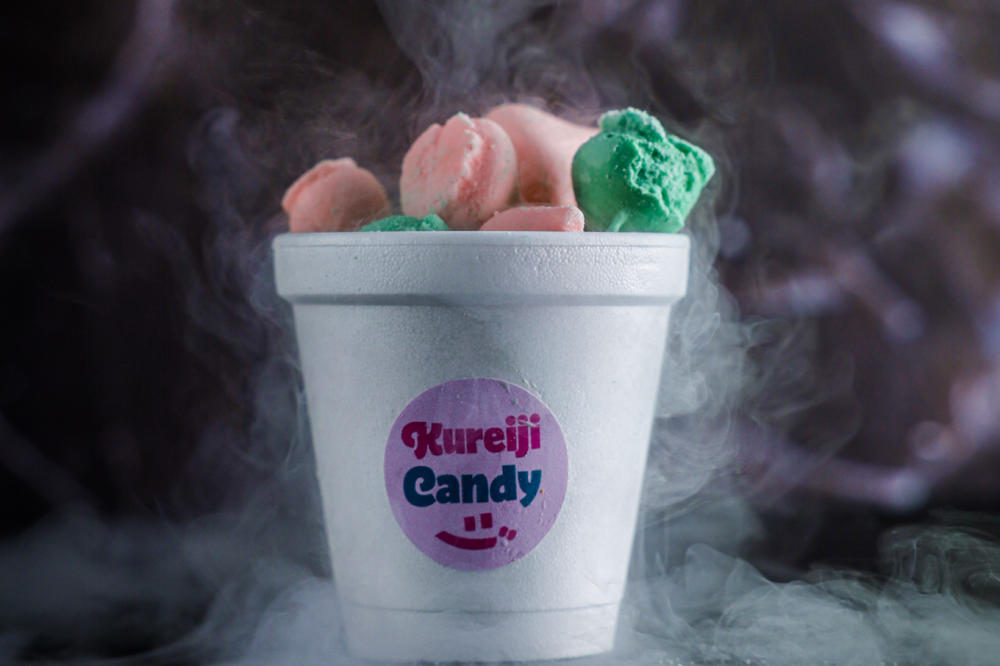
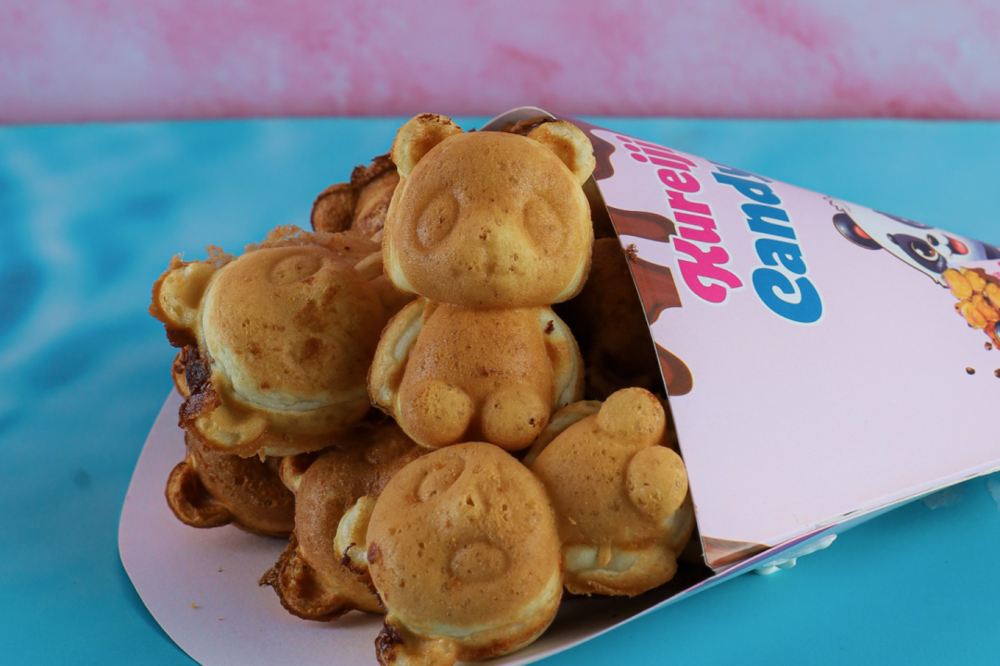

Suspiros ou pipocas doces (versão vegana), congeladas com nitrogênio líquido. Ao mastigar, solta fumaça pela boca e nariz! É doce, é show, é viral.

Pequenos doces em formato de ursinho, preparados para trazer uma dose de fofura e diversão a cada mordida.

Você é fã de One Piece? Então não pode perder essas delícias!Temos um brigadeiro incrível inspirado na Gomu Gomu no Mi, a fruta do Luffy
Sabores tropicais e refrescantes servidos de um jeito totalmente único. Nossos gelatos artesanais são preparados e apresentados dentro da casca de frutas